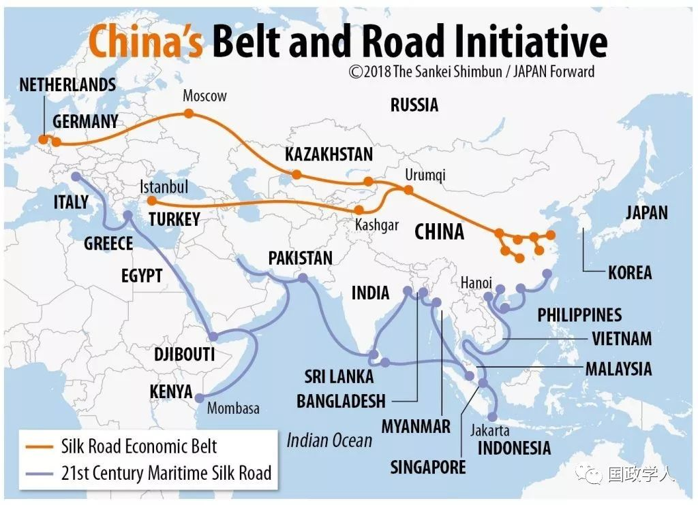

收录于合集

简 介
【作者】 Jeff M. Smith 是美国传统基金会亚洲研究中心的研究员，主要研究方向为南亚问题。 Sarah Brown 是2019年春美国传统基金会青年领袖计划成员。
** **【 来源 】****2019年5月23日 外交家（The Diplomat）
** 【编译】** 尚道国际资讯

近期，中国开始调整“一带一路”，以提升该倡议的声誉。今年4月底，中国主办了第二届“一带一路”国际合作高峰论坛，吸引了数十位世界各国领导人和数千名与会者来到北京，为这一倡议赢得声誉。几周前，在中国领导人访问罗马期间，意大利与中国签署了《关于共建“一带一路”合作的谅解备忘录》（Memorandum of Understanding）。
从字面上看，这样一份不具有约束力的谅解备忘录可能没有什么特别的新闻价值。然而，尽管“一带一路”倡议经过了5年的大力宣传，中国政府迄今仍未能赢得任何西欧大国或七国集团（G7）成员对“一带一路”的支持。意大利作为北约成员国和欧元区第三大经济体向中国投出的信任票是“一带一路”倡议的一大亮点。
为什么“一带一路”在意大利得到了如此热烈的欢迎，尽管其他国家仍然有所担忧？从意大利疲软的经济态势可以预计，今年意大利的经济将收缩0.2%。目前意大利的公共债务已经超过GDP的130%，预算赤字也在上升。简而言之，意大利资金匮乏，而中国领导人在抵达罗马时带着28亿美元的投资承诺。正如分析师Lucrezia Poggetti所观察到的，中国官员事先通知意大利官员，如果意大利不签署“一带一路”谅解备忘录，中方提出的商业协议将被撤销。
那么备忘录里到底写了什么呢？备忘录里约有29项相对模糊的承诺，内容涵盖基础设施、贸易和空间合作，并且分散在加强天然气和重型燃气轮机等领域合作的承诺中。在中国领导人访问期间签署的十份商业协议中，内容涉及运输、能源、钢铁、金融和造船等领域的私营企业。其余的则是机构合作，包括在创新和电子商务领域的合作以及消除双重征税。意大利能源巨头埃尼集团（ Eni ）获得了中国银行的信贷额度。并且意大利国家银行将出售“熊猫债券”。
最引人注目的是，中国交通建设公司获得了为意大利的的里雅斯特和热那亚港口提供基础设施支持的合同。的里雅斯特协议涉及港口地区的铁路基础设施。在热那亚，港务局与中国交通建设公司签订合同，由中方为其提供技术支持和全新的防波堤来保护海岸线。
总而言之，谅解备忘录对具体细节轻描淡写，并且避免涉及地缘政治和透明度方面的一些问题，而这些问题和担忧的印象产生于“一带一路”在发展中国家的“不良记录”——这或许反映了意大利更强硬的谈判立场。文件中明确声明，该协议不具有法律约束力，有效期为五年，除非任何一方提前三个月通知终止协议。
尽管如此，“一带一路”倡议在三个层面上仍存在争议。首先，这份谅解备忘录在欧洲内部引发了争议，欧洲一直为如何在内部分歧严重的核心集团中构建一种与不断变化的中国打交道的新模式而绞尽脑汁。对于中国试图通过“16+1模式”分别与东欧和中欧国家示好和谈判的做法，法国和德国感到十分不满。一些西欧国家认为这种做法是试图破坏欧洲共识，并且削弱欧盟的谈判地位。
德国经济部长彼得•阿尔特迈尔（Peter Altmaier）最近解释称:“在欧盟大国中，我们已经达成共识，我们不想签署任何双边备忘录，但将共同（与中国）做出必要的安排。”法国总统埃马纽埃尔•马克龙（Emmanuel Macron）在意大利签署谅解备忘录后宣布:“多年来，我们的做法不协调促使中国利用了我们的分歧。”“欧洲天真的时代已经结束。”
此外，人们对中国在欧洲不断扩大的经济足迹感到担忧。根据MERICS最近的一份报告显示，“与一带一路相关的基础设施项目不仅造成了欧盟地区邻国的财政不稳定，而且在交通、能源、通信等方面经常不符合欧盟建设大规模基础设施的规则和标准。”
其次，这份谅解备忘录在意大利国内引发了争议。值得注意的是，根据佩尤民意调查（Pew）显示，在欧洲民众中意大利人对中国最不满意：60%的人不喜欢中国，而只有29%的人喜欢中国。围绕“一带一路”的辩论，导致意大利执政的右翼联盟出现了分裂，该联盟由北方联盟的马泰奥•萨尔维尼(Matteo Salvini)和五星运动的路易吉•迪马尤(Luigi di Maio)组成。后者支持谅解备忘录，而谅解备忘录本身就是该党经济发展部副国务卿米歇尔•格拉奇(Michele Geraci)的主意。格拉奇曾在上海的私营企业工作了10年，并且在上任后成立了专属的中国特别工作组，自那以来一直负责接送意大利外交官往返北京。
联盟党副总理萨尔维尼则要谨慎得多。在谅解备忘录签署当天，萨尔维尼强调“不要告诉我，中国是一个自由市场。意大利每年因中国仿冒品损失600亿欧元。”萨尔维尼一直抱怨“中国与西方精神不一致”，并且他还坚称将对中国在的里雅斯特和热那亚港口的投资保持警惕。
最后，这份谅解备忘录在国际上引发了争议，以至于美国国家安全委员会发布了一条不同寻常的推文警告:“支持‘一带一路’建设将使中国掠夺性的投资方式具有合法性，不会给意大利人民带来任何好处。”这种担忧不无道理：在意大利做出决定后不久，瑞士与中国签署了在“一带一路”第三国开展合作的谅解备忘录，新西兰也表示可能会缓和对“一带一路”倡议的反对态度。
除此之外，意大利的决定可能会减轻北京改革该倡议的压力。从斯里兰卡到马尔代夫，从澳大利亚到肯尼亚，批评人士对“一带一路”缺乏透明度、问责制、高标准和财政可持续性提出了合理化的担忧。但有迹象表明，北京方面已开始将这种阻力内在化，甚至可能调整“一带一路”来回应这些批评。然而，如果中国政府认为自己已成功缓解了这些担忧，就可能减弱实施更有意义的改革的动力。
在欧洲大陆正在改写与中国接触的条款之际，如果意大利能表现出与法国、德国和其他国家的团结，并以实力雄厚的姿态与中国进行谈判，那将更有利于意大利。但它选择不这么做。伴随着先前的一带一路项目，中国是否会成为“一带一路”战略陷阱、“白象”项目和地缘政治包袱的牺牲品？或者，它会为如何以更有利的方式与中国谈判提供方向，以达成可以用事实证明的透明、财务状况良好、符合参与国利益的交易？欧洲、美国和全世界都将拭目以待。
_ ** _ 本文由国政学人微信平台独家编译首发**
更多阅读
【重磅速递】约瑟夫·奈：美国霸权的兴衰：从威尔逊到特朗普 | 国政学人
【重磅推荐】巴里·布赞：英国学派视角下的中国崛起 | 国政学人
【重磅速递】米尔斯海默：注定失败：自由主义国际秩序的兴衰 | 国政学人
【国际组织】IO杂志：联合国维和行动的武力运用问题研究 | 国政学人
【国际秩序】为什么自由主义国际秩序理念将美国外交政策引入歧途？| 国政学人
【关系理论】“关系”：世界政治关系理论的中国话语 | 国政学人
【百年国关】历史在国际社会中的应用：从巴黎和会到现在 | 国政学人
【英国学派】张勇进：中国与全球国际社会中的自由主义等级制：实力与对规范变迁的协商 | 国政学人
【地区秩序】论经济实力的可转化性：中国经济崛起与东亚安全秩序 | 国政学人
【中俄关系】不得已的伙伴：系统-单元动态与中俄关系 | 国政学人
【IPE研究】美国对外贸易政策的“1934年体制”是如何形成的？ | 国政学人
【现实主义】斯蒂芬·沃尔特：傲慢的终结与美国克制的新时代 | 国政学人
【理论批判】系统、层次与结构理论：沃尔兹的理论并非系统理论 | 国政学人
【外交政策】单极体系下的不和平状态与美国外交政策 | 国政学人
【欧洲研究】资本主义多样性与合规：加入欧盟后中东欧的经济改革 | 国政学人